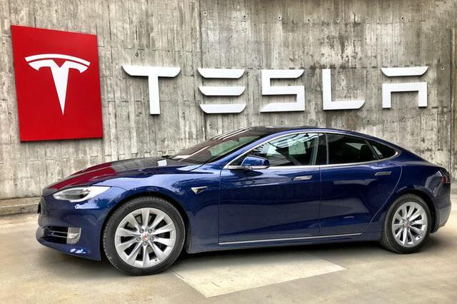

Veículos Tesla terão videoconferências Zoom em breve
A Zoom está trabalhando com a Tesla para trazer videoconferência para seus veículos. O anúncio, feito na conferência Zoomtopia de 2022, não deu muitos detalhes. Mas, de acordo com a gerente de produtos do grupo da empresa, Nitasha Walia, o recurso de videoconferência “será padrão em todos os novos modelos da Tesla em breve”.
Ler mais

Twitter, Meta e Microsoft: o que explica as demissões em massa das big techs?
O cenário econômico no setor de tecnologia desacelerou em 2022. Após um período de vasto crescimento durante a pandemia, as big techs se viram obrigadas a cortar gastos e, consequentemente, enxugar o quadro de pessoas. Ao longo dos últimos meses, grandes corporativas, como Microsoft, Twitter e Netflix, anunciaram o congelamento das contratações ou demissões em massa.
Ler mais
Amber Heard, ex de Elon Musk, deixa o Twitter após empresário comprar rede social.
Uma diversidade de pessoas disse que estavam deixando o Twitter depois que Elon Musk comprou a empresa, mas sua ex-namorada, Amber Heard, parece ter saído da rede social. Ela anunciou através de sua página verificada no Facebook.
Ler mais
Razer anuncia controle Wolverine V2 Pro para PlayStation 5 compatível com PC
“O Razer Wolverine V2 Pro apresenta um novo nível de velocidade e precisão para jogos competitivos”, afirma Richard Hashim, chefe da divisão de dispositivos móveis e consoles da Razer. “Ele oferece tudo o que os jogadores apaixonados por consoles e PCs precisam para estar sempre no topo”.
Ler mais


.jpg "The Whale o Filme")